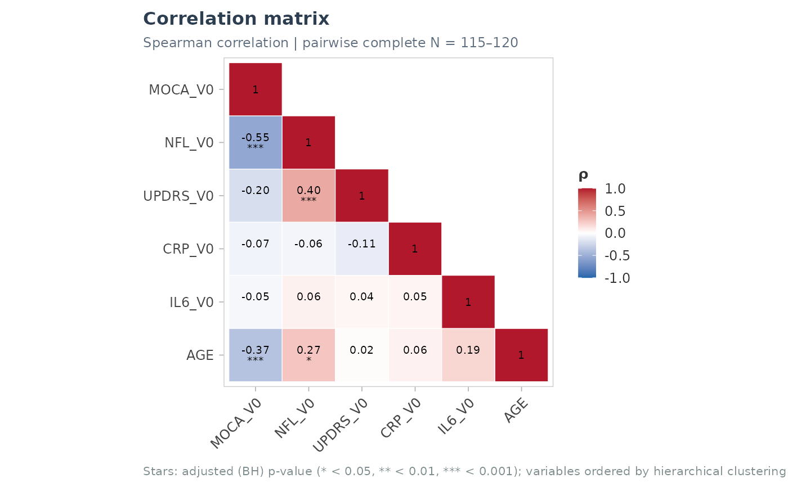
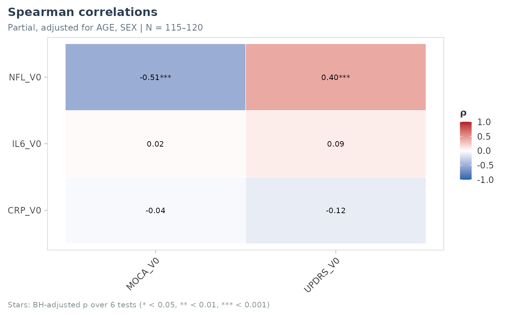

plot_cor_heatmap(): lower triangle (diagonal included) of a correlation matrix fromcor_matrix_test(), with values and stars, variables optionally ordered by hierarchical clustering.plot_cor_cross(): rectangular heatmap of the correlations between two sets of variables (e.g. biomarkers x scores), optionally partial (adjusted for covariates, seecor_partial_spearman()).
Usage
plot_cor_heatmap(
cm,
labels = NULL,
use_adj = TRUE,
order = c("hclust", "original"),
show_values = TRUE,
base_size = 10,
title = NULL,
value_size = 2.6
)
plot_cor_cross(
data,
x_vars,
y_vars,
covariates = NULL,
labels = NULL,
p_adjust = "BH",
base_size = 10,
title = NULL
)Arguments
- cm
Output of
cor_matrix_test().- labels
Optional named vector of labels.
- use_adj
Stars on adjusted (
TRUE) or raw p-values.- order
"hclust"(Ward clustering on 1 - r) or"original".- show_values
Print the correlations and stars.
- base_size
Base font size.
- title
Title.
- value_size
Size of the printed values.
- data
A data frame.
- x_vars, y_vars
Variables in rows and columns (names or tidyselect).
- covariates
Optional adjustment covariates (names or tidyselect).
- p_adjust
Multiplicity correction over all the pairs.
Examples
cm <- cor_matrix_test(cohort_sim, c(NFL_V0, IL6_V0, CRP_V0, MOCA_V0, UPDRS_V0, AGE))
plot_cor_heatmap(cm)

res <- plot_cor_cross(cohort_sim, c(NFL_V0, IL6_V0, CRP_V0), c(MOCA_V0, UPDRS_V0),
covariates = c(AGE, SEX))
res$plot
